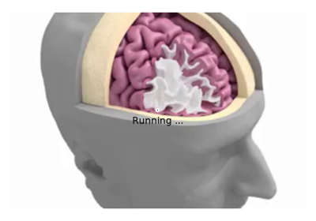

Stimulus generation examples#
Examples of how to generate stimuli for experiments.


Examine and manipulate stimulus power
Examine and manipulate stimulus power

Video property control
Examples of how to generate stimuli for experiments.
Examine and manipulate stimulus power